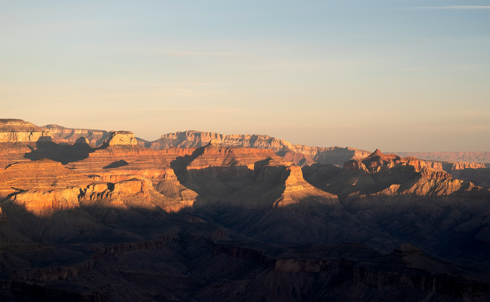
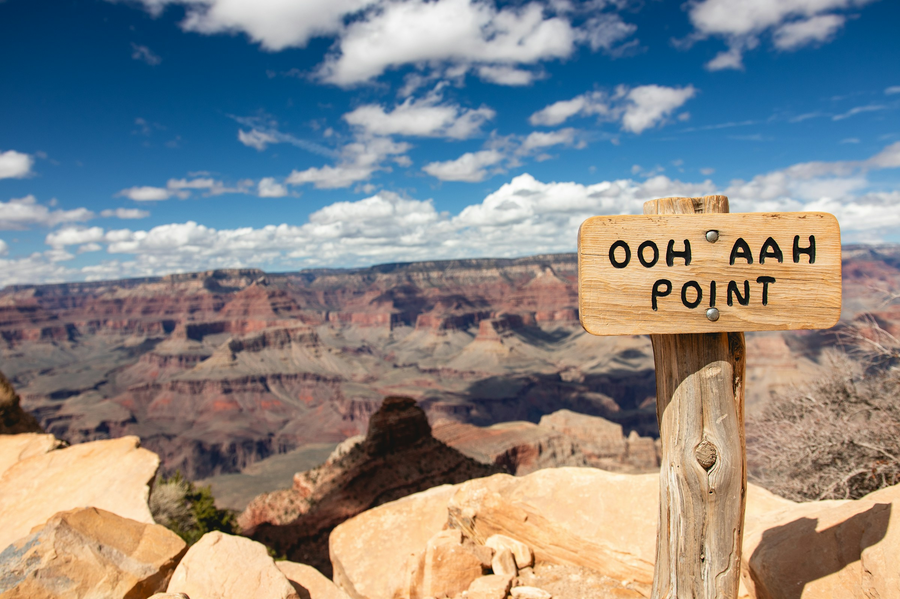
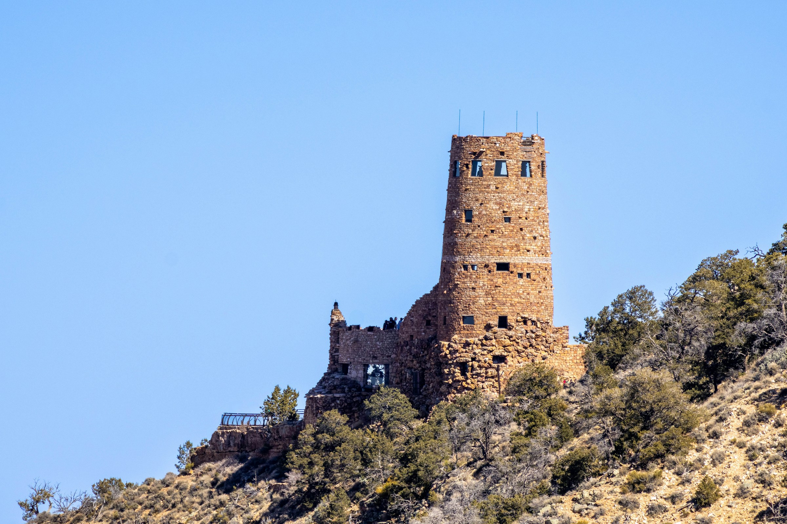
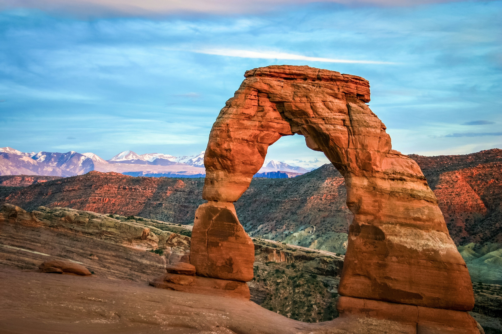
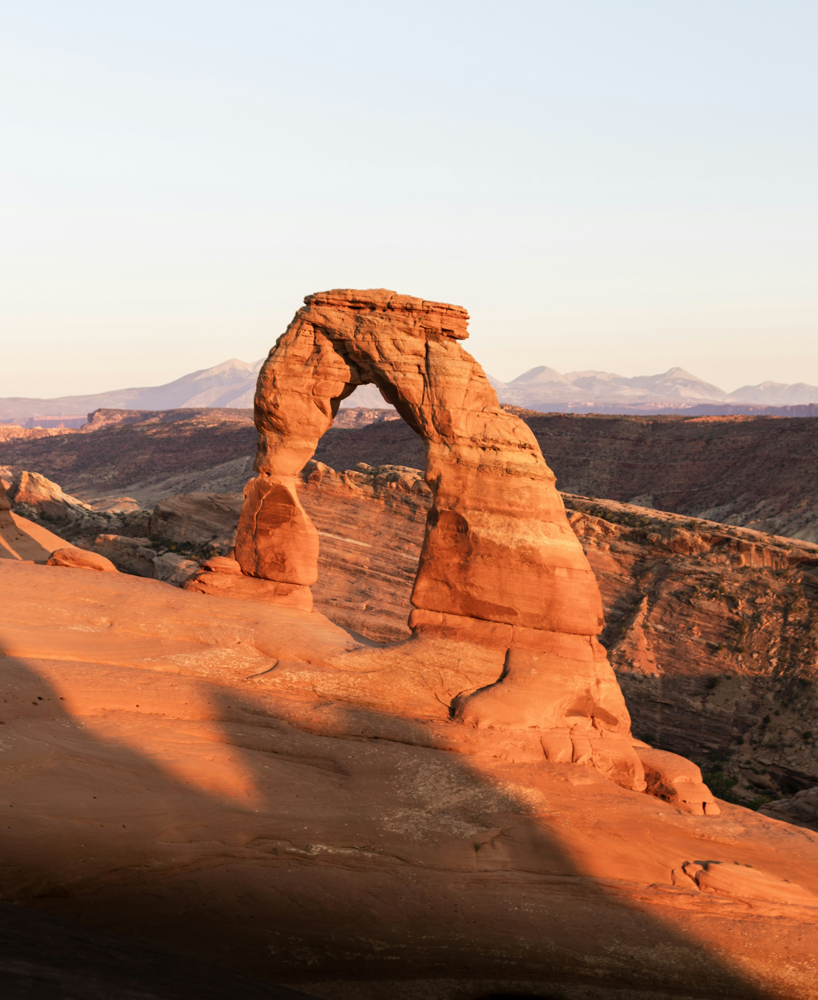
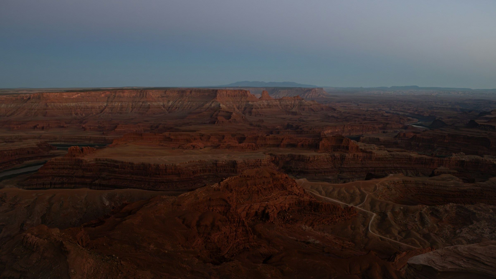
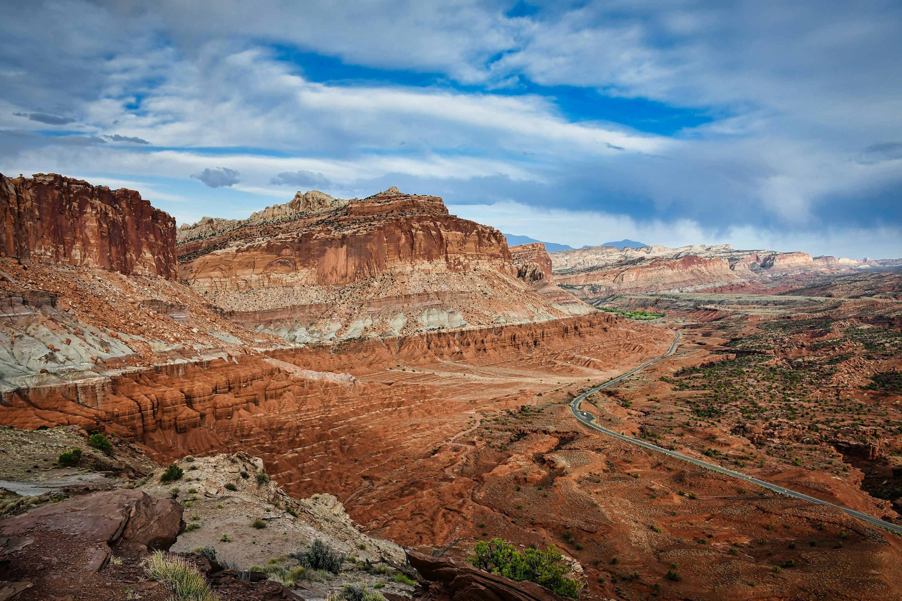
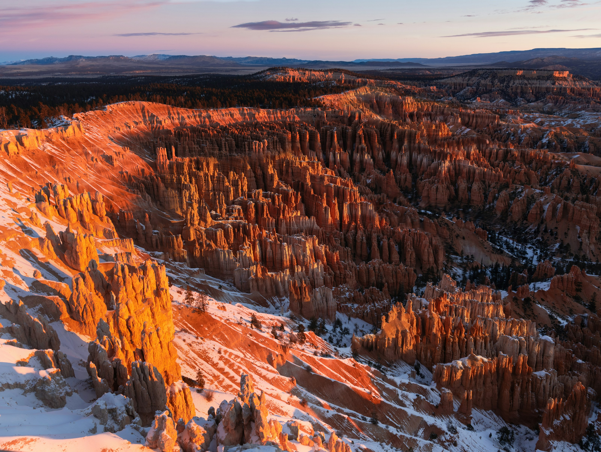
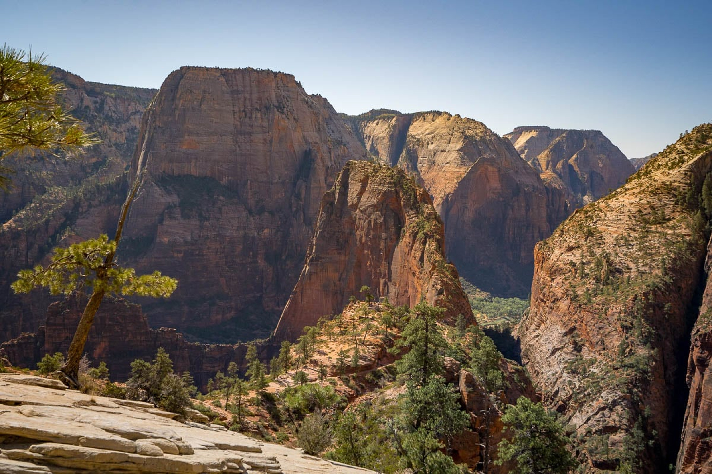
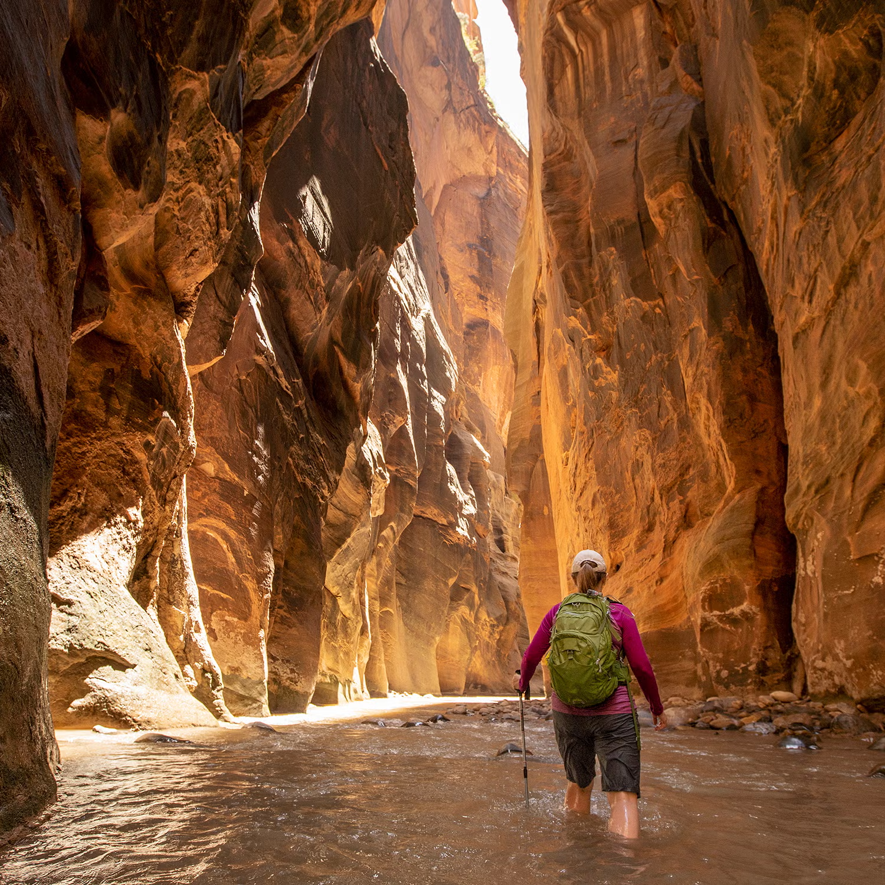

Select a date, then a day option. Changing the option changes its schedule and Google Maps route. All times are local planning estimates; only the campsites are booked.
Van pickup: October 24 confirmed. That night’s lodging is not recorded.
Sunday · Oct 25, 2026
First canyon light
Use the extra day from your confirmed October 24 van pickup to arrive calmly. A first rim walk delivers more than squeezing in a below-rim hike after the drive.

Grand Canyon
Booked overnightMather • night 1 of 2No hookup
Daylight, approximately06:45 → 17:40Grand Canyon · local time
Drive / transfersLas Vegas → South Rim: roughly 4.5–5 h driving, plus food, fuel and stops. Inside-park driving and parking add time.
Shower planShower before leaving Las Vegas if available. Mather showers currently closed; Tusayan is the paid fallback.
Clock checkLas Vegas PDT → Grand Canyon MST: same clock today (UTC−7).
Choose the shape of your day
Best first-day balance: broad canyon views, low effort and time to settle into the van.
Walking / time: 2–4 km flexible walking; 1.5–2.5 h with viewpoints
Make room for it: No major hike today; save fresh legs for Cedar Ridge.
Walking links show the locations and may not follow the intended trail. Use the official map and AllTrails route for hiking; shuttle and guided legs are not campervan directions.
Walking links show the locations and may not follow the intended trail. Use the official map and AllTrails route for hiking; shuttle and guided legs are not campervan directions.
Google Maps can recalculate roads and cannot check your van’s dimensions or rental rules. Follow this plan’s access notes and current signs.
Direct drive with essential stops
Do not race sunset; the next two mornings are at the canyon.
Camp or a single nearby viewpoint
Allow 30–45 minutes for the view, weather and arrival permitting.
Settle into Mather
Food, water and the early shuttle plan take priority over another outing.
Current access notes & sources
October 24 overnight location is not recorded; arrange a legal overnight for the pickup night. The October 25 schedule assumes a Las Vegas-area departure.
Stage 4 water restrictions affect South Rim services. Mather dry camping remains listed open; bring water and do not depend on campground showers or trail taps.
Cedar Ridge is the recommended canyon hike: you pass Ooh Aah Point, follow a dramatic exposed ridge, and still have room for contrasting rim views in the afternoon.

Grand Canyon
Booked overnightMather • night 2 of 2No hookup
Daylight, approximately06:45 → 17:40Grand Canyon · local time
Drive / transfersLocal transfers: allow 45–75 min each way for parking/shuttle connections, plus a Tusayan shower detour.
Shower planGrand Canyon Camper Village, Tusayan: $5/person per 8-min token ($15 for 3). Buy tokens by 16:00 conservatively; allow 60–90 min including drive.
Clock checkArizona MST all day (UTC−7).
Choose the shape of your day
Best combination of immersive hiking and wide, changing rim panoramas.
Walking / time: Cedar Ridge 5.5 km mapped, 3–4 h; rim segment ~1.8 km one way
Make room for it: One canyon descent only. Tusayan stop trims the afternoon to selected viewpoints.
Walking links show the locations and may not follow the intended trail. Use the official map and AllTrails route for hiking; shuttle and guided legs are not campervan directions.
South Kaibab has no private trailhead parking; Hermit Road is closed to private vehicles through Nov 30. Both use shuttle/foot legs, never van directions.
Google Maps can recalculate roads and cannot check your van’s dimensions or rental rules. Follow this plan’s access notes and current signs.
Breakfast and shuttle transfer
Use the visitor-center Orange Route or confirmed Hikers’ Express. No private parking at South Kaibab trailhead.
South Kaibab → Cedar Ridge → return
Turn around here. Carry all water; allow more time climbing back than descending. Pass Ooh Aah on the same route.
Lunch and Tusayan shower
Use the midday recovery window for token purchase and supplies; do not rely on closed Mather showers.
Hermit Road: a short rim section
Shuttle to Powell, walk via Hopi to Mohave (~1.8 km), then shuttle back. Shorten if transfers run late.
Walking links show the locations and may not follow the intended trail. Use the official map and AllTrails route for hiking; shuttle and guided legs are not campervan directions.
Shuttle to Pima, walk to Hermits Rest and return by bus. Replaces, or extends only a shortened afternoon; no van.
South Kaibab has no private trailhead parking; Hermit Road is closed to private vehicles through Nov 30. Both use shuttle/foot legs, never van directions.
Google Maps can recalculate roads and cannot check your van’s dimensions or rental rules. Follow this plan’s access notes and current signs.
Breakfast and shuttle
Transfer to South Kaibab without driving to the trailhead.
Ooh Aah Point return
Take time at the viewpoint, then climb back before fatigue accumulates.
Food, Tusayan shower and rest
This is a real recovery window.
Hermit Road by shuttle and on foot
Add selected rim segments and Pima/Mohave views as energy permits; return-stop patterns differ from outbound.
Walking links show the locations and may not follow the intended trail. Use the official map and AllTrails route for hiking; shuttle and guided legs are not campervan directions.
Driving segment is available; omit shower if office/token timing fails.
South Kaibab has no private trailhead parking; Hermit Road is closed to private vehicles through Nov 30. Both use shuttle/foot legs, never van directions.
Skeleton Point replaces substantial Hermit walking. Tusayan shower detour is conditional on tokens/hours.
Google Maps can recalculate roads and cannot check your van’s dimensions or rental rules. Follow this plan’s access notes and current signs.
Breakfast and earliest practical shuttle
Carry all water and food; check current South Kaibab access.
Skeleton Point return
An ambitious alternative. Turn earlier if the return climb, footing or conditions warrant.
Late lunch and rest
If shower tokens were already bought, a later Tusayan visit can work; otherwise do not assume office access.
Nearby rim viewpoint only
Skip the longer Hermit Road circuit; keep the evening simple.
Walking links show the locations and may not follow the intended trail. Use the official map and AllTrails route for hiking; shuttle and guided legs are not campervan directions.
South Kaibab has no private trailhead parking; Hermit Road is closed to private vehicles through Nov 30. Both use shuttle/foot legs, never van directions.
Resthouse water off in current research; recheck closures before descending.
Google Maps can recalculate roads and cannot check your van’s dimensions or rental rules. Follow this plan’s access notes and current signs.
Bright Angel to 1.5 Mile Resthouse
Stop here rather than extending the day into the lower canyon. No reliable trail water assumed.
Lunch and shower detour
Rest and refuel before the afternoon.
Selected rim viewpoints
Use the shuttle and short walks; reduce the afternoon if the morning took longer.
Mapped routes can differ from the shorter segments in this schedule. Full variants and practical notes are in the hike comparison below.
Current access notes & sources
Hermit Road is shuttle-only for private vehicles through November 30. The Red Route starts at 08:00; return buses stop at fewer viewpoints.
South Kaibab has no water. Current Bright Angel restrictions deeper than the 1.5 Mile Resthouse are changing; do not treat the currently advertised reopening date as a promise.
Make the east-rim drive the morning experience, then let a Navajo guide take you into Monument Valley. Exact October 27 sunset-tour availability is still unconfirmed.

Monument Valley
Booked overnightThe View • dry RV siteNo hookup
Daylight, approximately07:40 → 18:30Monument Valley · local time
Drive / transfersSouth Rim → Monument Valley: ~3–3.5 h actual driving, plus viewpoints, lunch and the +1 h clock change.
Shower planThe View showers are advertised for all campers. Use after the tour or next morning; exact hours not published.
Clock checkGrand Canyon MST → Monument Valley MDT: put clocks FORWARD 1 hour.
Choose the shape of your day
The best contrast: canyon geology in the morning and Navajo interpretation among the buttes in warm light.
Walking / time: Short viewpoints, then a 2.5–3 h vehicle tour
Make room for it: No Wildcat hike or additional side trip. Tour must be confirmed before using this timetable.
Choose only if: Book only after operator confirms the October 27 start, permitted route, meeting point, total price and cancellation terms.
Schematic guide leg only. Meet at operator-confirmed location; no tour booked and no private van on Valley Drive.
Walking links show the locations and may not follow the intended trail. Use the official map and AllTrails route for hiking; shuttle and guided legs are not campervan directions.
Campsite sunset is separate; do not assume public patio access after 17:00.
No Tusayan Pueblo on Tuesday; no closed Lipan Point. Monument Valley RV Valley Drive forbidden. Guided access and tour time/meeting require confirmation. Navajo daylight time is one hour ahead of Grand Canyon.
Google Maps can recalculate roads and cannot check your van’s dimensions or rental rules. Follow this plan’s access notes and current signs.
Leave Mather
Pack breakfast/lunch and water. Fuel before the long transfer.
Grandview, Navajo Point, Desert View
Choose two short stops. Watchtower opens at 09:00 if staffed; free timed tickets are issued there.
Drive toward Monument Valley
Allow lunch and the clock change. Aim to reach the area around 14:00–14:30 MDT.
Check in / confirmed tour meeting
Meeting point depends on operator; Navajo Spirit meets ~4 miles from The View. Keep time for payment and admission.
Reserved guided tour
Budget 2.5–3 h. October 15 notice permits reserved guided Scenic Drive/Mystery Valley access with restrictions; backcountry remains closed.
Camp views and dinner
Sunset is around 18:30. Use your booked campsite view, rather than assuming the visitor-center patio stays open after 17:00.
Best fallback if no suitable afternoon tour exists or the drive should remain relaxed.
Walking / time: 2–3 h viewpoints today; 2.5–3 h tour Oct 28
Make room for it: Moves the guided tour to Oct 28 and removes the substantial Arches arrival hike.
Walking links show the locations and may not follow the intended trail. Use the official map and AllTrails route for hiking; shuttle and guided legs are not campervan directions.
Campsite sunset is separate; do not assume public patio access after 17:00.
No Tusayan Pueblo on Tuesday; no closed Lipan Point. Monument Valley RV Valley Drive forbidden. Guided access and tour time/meeting require confirmation. Navajo daylight time is one hour ahead of Grand Canyon.
Google Maps can recalculate roads and cannot check your van’s dimensions or rental rules. Follow this plan’s access notes and current signs.
Desert View Drive
Spend more time at two viewpoints and the tower, without adding a below-rim hike.
Drive and lunch
Arrive in time for camp check-in and the public viewpoint during published hours.
Camp panorama and sunset
Confirm tomorrow’s morning tour; have a shower and an early dinner.
Keep the campsite panorama even if the travel day runs long.
Walking / time: A few short viewpoints only
Make room for it: Drop the tower queue and any tour that cannot be reached with a sensible meeting buffer.
Walking links show the locations and may not follow the intended trail. Use the official map and AllTrails route for hiking; shuttle and guided legs are not campervan directions.
Campsite sunset is separate; do not assume public patio access after 17:00.
No Tusayan Pueblo on Tuesday; no closed Lipan Point. Monument Valley RV Valley Drive forbidden. Guided access and tour time/meeting require confirmation. Navajo daylight time is one hour ahead of Grand Canyon.
Google Maps can recalculate roads and cannot check your van’s dimensions or rental rules. Follow this plan’s access notes and current signs.
Leave Mather; one east-rim stop
Choose Navajo Point or Desert View. Skip extra viewpoints if behind schedule.
Check in at The View
Do not promise a same-day walk-up sunset tour; arrange the next morning if available.
Settle at the campsite
The booked overnight location is the main visual experience today.
Current access notes & sources
Tusayan Pueblo is closed Tuesdays, including October 27. Desert View food outlets have seasonal closures: carry lunch.
Campervans/RVs cannot drive the 17-mile Valley Drive. Backcountry remains closed under the October 15 notice; do not assume advertised arches/hogan itineraries can operate unchanged.
Wildcat Trail access has not been confirmed under the current notice. The View advertises a 24-ft RV maximum; verify the actual custom Hi5 dimensions.
The ideal arrival afternoon is the Windows district: little walking, huge arches and flexibility after a transfer. A full Delicate Arch sunset is an optional upgrade only with an early arrival.

Moab
Booked overnightKen’s Lake • Loop A, night 1 of 2No hookup
Daylight, approximately07:40 → 18:25Moab · local time
Drive / transfersMonument Valley → Moab: ~3–3.5 h driving; Ken’s Lake and the Arches entrance are on opposite sides of town.
Shower planShower at The View before departure. Optional MRAC in Moab ($12/adult, $36 for 3) if time remains.
Clock checkMonument Valley and Moab both MDT today (UTC−6).
Choose the shape of your day
Highest experience-to-effort arrival: the buttes at dawn, then two memorable arch settings.
Walking / time: Windows + Double Arch ~2.8 km; 1.5–2 h with photos
Make room for it: Leaves Delicate Arch for tomorrow; no need to repeat Windows Oct 29.
Walking links show the locations and may not follow the intended trail. Use the official map and AllTrails route for hiking; shuttle and guided legs are not campervan directions.
Walking links show the locations and may not follow the intended trail. Use the official map and AllTrails route for hiking; shuttle and guided legs are not campervan directions.
Prior reservation, permitted route and meeting point required.
Walking links show the locations and may not follow the intended trail. Use the official map and AllTrails route for hiking; shuttle and guided legs are not campervan directions.
Requires staff confirmation; replaces the tour and much of an Arches afternoon.
No tour booking is implied. No campervan on Valley Drive.
Google Maps can recalculate roads and cannot check your van’s dimensions or rental rules. Follow this plan’s access notes and current signs.
Camp sunrise and pack
Shower early or after the tour if the campground permits.
Confirmed morning tour
Exact departure/route must be arranged. Do not assume the operator’s usual backcountry route is open.
Drive to Moab, lunch and supplies
Allow the full road time plus practical stops.
Ken’s Lake or one Arches overlook
Choose Park Avenue overlook only if arrival time/energy allow; otherwise settle into camp.
Current access notes & sources
Ken’s Lake has no drinking water or electric hookups. Fill water in Moab; short unpaved access eligibility depends on your signed rental terms and the actual approach.
No Arches timed-entry reservation is required in 2026. A park entrance fee/pass is still separate from camping.
Delicate Arch is the priority, with an easier Devils Garden introduction. Upgrade to Double O or the Primitive Loop by removing other walks, rather than adding them all.

Arches
Booked overnightKen’s Lake • Loop A, night 2 of 2No hookup
Daylight, approximately07:40 → 18:25Arches · local time
Drive / transfersKen’s Lake → Devils Garden: allow ~1–1.25 h; add park-road transfers and entrance/parking buffers.
Shower planMRAC optional today. If choosing Canyonlands sunrise tomorrow, shower and fill water today rather than returning to Moab Friday.
Clock checkMDT (UTC−6). Sunset around 18:20; carry headlamps.
Choose the shape of your day
A full but varied day: fins, giant arches at close range, then the freestanding icon.
Walking / time: ~11–12 km total if Windows not done yesterday; ~8–9 km if it was
Make room for it: Do not repeat Windows if completed Oct 28; use that time for lunch/rest or Park Avenue.
Walking links show the locations and may not follow the intended trail. Use the official map and AllTrails route for hiking; shuttle and guided legs are not campervan directions.
Mapped routes can differ from the shorter segments in this schedule. Full variants and practical notes are in the hike comparison below.
A more adventurous morning beyond Landscape, with fin walking and scrambling. Best after Delicate was completed October 28.
Walking / time: Double O 6.9 km, 3–4 h; optional short arches ~2.8 km
Make room for it: Replaces Landscape and today’s Delicate outing. Delicate must be already completed or deliberately omitted.
Choose only if: Dry conditions and comfort on exposed sandstone; Delicate already done or deliberately omitted. Do not continue into the full Primitive Loop by accident.
Walking links show the locations and may not follow the intended trail. Use the official map and AllTrails route for hiking; shuttle and guided legs are not campervan directions.
Primitive option uses the full AllTrails loop and current signs; these pins do not encode every primitive-route branch.
Walking links show the locations and may not follow the intended trail. Use the official map and AllTrails route for hiking; shuttle and guided legs are not campervan directions.
Walking links show the locations and may not follow the intended trail. Use the official map and AllTrails route for hiking; shuttle and guided legs are not campervan directions.
Mapped routes can differ from the shorter segments in this schedule. Full variants and practical notes are in the hike comparison below.
Current access notes & sources
Fiery Furnace is a permit-dependent replacement, not an add-on. For October 29 the prospective self-guided release is October 22 at 08:00 Mountain; in-person orientation and route-finding are required. Ranger tours end in September.
AllTrails popularity supports prioritizing Delicate (#1) and Devils Garden variants (#2/#3), but route difficulty and weather govern the choice.
Island in the Sky supplies immense landscapes; Dead Horse Point makes a strong sunset finish. Mesa Arch does not have to be a crowded sunrise mission to be worthwhile.

Canyonlands & Dead Horse Point
Booked overnightWingate • electric nightElectric hookup
Daylight, approximately07:40 → 18:25Canyonlands & Dead Horse Point · local time
Drive / transfersMoab → Island in the Sky ~45–60 min; scenic-road drives ~1 h; Canyonlands → Dead Horse Point ~30–40 min.
Shower planRecommended MRAC before leaving Moab ($36/3 adults). Wingate has no showers or RV water fill; fill in Moab.
Clock checkMDT (UTC−6). Sunset around 18:20.
Choose the shape of your day
Best logistics and variety without a predawn start. Choose one substantial rim walk.
Walking / time: ~5–7 km walking; 3–4 h across stops
Make room for it: Skip sunrise and extra similar rim hikes; keep Dead Horse Point unhurried.
Walking links show the locations and may not follow the intended trail. Use the official map and AllTrails route for hiking; shuttle and guided legs are not campervan directions.
Walk selected East/West Rim segments only; protect camp/sunset buffer.
Use paved US-191 / UT-313 mesa approaches. Reject Shafer Trail, White Rim Road, Mineral Bottom and unpaved Potash shortcuts. Google has no campervan dimensions or paved-only option.
Google Maps can recalculate roads and cannot check your van’s dimensions or rental rules. Follow this plan’s access notes and current signs.
Breakfast, MRAC and water fill
Check Friday opening; leave Moab with supplies and enough water.
Mesa Arch
Short walk and time at the arch. Later light still gives a striking canyon frame.
Grand View Point + packed lunch
Main rim walk (~3 km) and viewpoints. Allow time to sit with the landscape.
Green River Overlook
Optional visitor-center stop; avoid a second long rim hike.
Wingate check-in and rest
Plug in, settle camp, and prepare warm layers for sunset.
Dead Horse Point overlook + short rim walk
Start near the main overlook. Keep distance flexible; the light is the priority.
Walking links show the locations and may not follow the intended trail. Use the official map and AllTrails route for hiking; shuttle and guided legs are not campervan directions.
Walk selected East/West Rim segments only; protect camp/sunset buffer.
Use paved US-191 / UT-313 mesa approaches. Reject Shafer Trail, White Rim Road, Mineral Bottom and unpaved Potash shortcuts. Google has no campervan dimensions or paved-only option.
Google Maps can recalculate roads and cannot check your van’s dimensions or rental rules. Follow this plan’s access notes and current signs.
Leave Ken’s Lake
Check exact drive/parking allowance. Carry headlamps and warm layers.
Mesa Arch sunrise
Arrive well before sunrise; expect limited space and other photographers.
Walking links show the locations and may not follow the intended trail. Use the official map and AllTrails route for hiking; shuttle and guided legs are not campervan directions.
Walk selected East/West Rim segments only; protect camp/sunset buffer.
Use paved US-191 / UT-313 mesa approaches. Reject Shafer Trail, White Rim Road, Mineral Bottom and unpaved Potash shortcuts. Google has no campervan dimensions or paved-only option.
Google Maps can recalculate roads and cannot check your van’s dimensions or rental rules. Follow this plan’s access notes and current signs.
Moab shower and supplies
As in the recommended day.
Mesa Arch
Then take the Upheaval Dome side road.
Upheaval first overlook + lunch
Allow ~75–100 min for the side-road drive and short hike; longer if continuing to the second overlook.
One major canyon viewpoint
Green River or Grand View overlook only, not another full hike.
Camp then Dead Horse sunset
Short main overlook walk instead of a big rim circuit.
Keep Dead Horse Point’s morning short so Capitol Reef gets a real afternoon. Hickman Bridge adds an intimate sandstone setting after the previous day’s immense panoramas.

Capitol Reef
Booked overnightFruita • dry campingNo hookup
Daylight, approximately07:50 → 18:30Capitol Reef · local time
Drive / transfersDead Horse Point → Fruita: ~3–3.5 h driving, plus food, fuel and short stops.
Shower planNo shower at Fruita. Optional Green River State Park en route: posted $7/vehicle + $3/person ($16/3); exact October 31 access unconfirmed.
Clock checkMDT today. Utah clocks fall BACK one hour overnight, before November 1.
Choose the shape of your day
Best balance of two parks while protecting the Capitol Reef afternoon.
Walking / time: ~1.8 km morning + Hickman 2.9 km; 3–4 h on foot/photos
Make room for it: No full Dead Horse rim circuit, Cassidy hike or long shower detour.
Walking links show the locations and may not follow the intended trail. Use the official map and AllTrails route for hiking; shuttle and guided legs are not campervan directions.
Out/back; turn at pavement end. No dirt Grand Wash or Capitol Gorge spur and no Sunset Point dirt road.
Use paved US-191 / UT-313 mesa approaches. Reject Shafer Trail, White Rim Road, Mineral Bottom and unpaved Potash shortcuts. Google has no campervan dimensions or paved-only option.
Grand Wash/Cassidy start is asphalt beside SR-24 at the northeast/east end. Verify returned pin before driving; no western dirt spur. Wash hiking requires safe flood forecast.
Google Maps can recalculate roads and cannot check your van’s dimensions or rental rules. Follow this plan’s access notes and current signs.
Dead Horse Point sunrise stroll
Short East/West Rim section near a suitable trailhead; check out and leave by 08:45–09:00.
Drive to Fruita
Allow a brief lunch stop; avoid turning the transfer into a succession of detours.
Camp / Gifford and lunch
Gifford currently publishes 09:00–16:30 and a November 22 season end; pie stock is never guaranteed.
Hickman Bridge
Walk to the bridge and spend time under the sandstone opening.
Petroglyph boardwalks / Fruita
A short cultural stop and late light among the orchards; do not expect an October 31 apple harvest.
Mapped routes can differ from the shorter segments in this schedule. Full variants and practical notes are in the hike comparison below.
A bigger Capitol Reef hike with arch-top views, if you prefer a longer day here.
Walking / time: ~11 km from paved SR-24 start; 4.5–5.5 h
Make room for it: Drops the Dead Horse morning hike, Hickman, Gifford queue and most other stops.
Choose only if: Dry conditions and early arrival. The app’s 5.3 km route starts at a different dirt-access trailhead and is not this paved-start itinerary.
Walking links show the locations and may not follow the intended trail. Use the official map and AllTrails route for hiking; shuttle and guided legs are not campervan directions.
Out/back; turn at pavement end. No dirt Grand Wash or Capitol Gorge spur and no Sunset Point dirt road.
Use paved US-191 / UT-313 mesa approaches. Reject Shafer Trail, White Rim Road, Mineral Bottom and unpaved Potash shortcuts. Google has no campervan dimensions or paved-only option.
Grand Wash/Cassidy start is asphalt beside SR-24 at the northeast/east end. Verify returned pin before driving; no western dirt spur. Wash hiking requires safe flood forecast.
Google Maps can recalculate roads and cannot check your van’s dimensions or rental rules. Follow this plan’s access notes and current signs.
Leave Wingate early
No long sunrise walk; breakfast packed.
Reach SR-24 Grand Wash access
Use the paved northeast start rather than the shorter dirt-road trailhead in many apps.
Grand Wash → Cassidy Arch return
Carry lunch and all water; choose an early turnaround if pace/footing demand it.
Fruita check-in and dinner
Only a nearby short stop if plenty of daylight remains.
Walking links show the locations and may not follow the intended trail. Use the official map and AllTrails route for hiking; shuttle and guided legs are not campervan directions.
Out/back; turn at pavement end. No dirt Grand Wash or Capitol Gorge spur and no Sunset Point dirt road.
Use paved US-191 / UT-313 mesa approaches. Reject Shafer Trail, White Rim Road, Mineral Bottom and unpaved Potash shortcuts. Google has no campervan dimensions or paved-only option.
Grand Wash/Cassidy start is asphalt beside SR-24 at the northeast/east end. Verify returned pin before driving; no western dirt spur. Wash hiking requires safe flood forecast.
Google Maps can recalculate roads and cannot check your van’s dimensions or rental rules. Follow this plan’s access notes and current signs.
Brief Dead Horse view and departure
Keep the morning short.
Drive, lunch and camp
Optional Green River shower adds a real detour and may shorten the hike.
Grand Wash partial narrows from SR-24
Turn around when ready; this is an out/back from the paved northeast trailhead.
Fruita and petroglyphs
Add the paved Scenic Drive only by trimming the hike and checking road status.
The biggest improvement over the old draft: drive Highway 12 in the morning and hike Queen’s Garden–Navajo Two Bridges this afternoon. That frees November 2 for a calmer Zion arrival.
Daylight, approximately06:55 → 17:30Bryce Canyon · local time
Drive / transfersFruita → Bryce via Highway 12: ~2.5–3 h actual driving; allow 5–6 h with two viewpoints, showers and lunch.
Shower planEscalante Petrified Forest: posted $10/vehicle + $5/person ($25/3). Allow 45–60 min; usually open until mid-November, early winterization possible.
Clock checkUtah is now MST (UTC−7), after clocks fell back. Sunset is around 17:30.
Choose the shape of your day
Best use of both days: the scenic road remains a highlight and Bryce gets a real below-rim hike.
Walking / time: Queen’s/Navajo ~4.8 km, 2.5–3 h
Make room for it: Drops the Reef morning hike, Calf Creek, museum and extended roadside stops.
Choose only if: Safe, open trail and a start by 14:00. If delayed or icy, use the viewpoints plan and move the loop to November 2.
Walking links show the locations and may not follow the intended trail. Use the official map and AllTrails route for hiking; shuttle and guided legs are not campervan directions.
Natural Bridge/Rainbow requires extra drive and safe open road; replaces descent.
No Bryce shuttle Nov 1–2; all walks return to van/camp. No unpaved scenic shortcuts. Check UDOT and park conditions; western route is not snow-proof.
Google Maps can recalculate roads and cannot check your van’s dimensions or rental rules. Follow this plan’s access notes and current signs.
Leave Fruita
Packed breakfast/lunch keeps the road day efficient.
Boulder Mountain and the Hogsback
Choose Larb Hollow OR Homestead Overlook, then Head of the Rocks if suitable legal van parking is available; ~30–40 min total. The drive itself is the experience.
Escalante shower stop
Confirm facilities/payment before committing; allow time for three people.
Drive, lunch and Bryce parking
Aim to be ready to hike by 13:00; 14:00 is the latest sensible start for this plan.
Queen’s Garden → Navajo Two Bridges
Use open branches only. Descend into the hoodoos and return to the rim before dark.
Camp and a rim viewpoint
Do not insist on a second distant viewpoint if tired.
Walking links show the locations and may not follow the intended trail. Use the official map and AllTrails route for hiking; shuttle and guided legs are not campervan directions.
Mapped routes can differ from the shorter segments in this schedule. Full variants and practical notes are in the hike comparison below.
For a waterfall/canyon experience instead of Bryce hiking today.
Walking / time: ~10 km, 4–5 h including waterfall; full travel day
Make room for it: Drops Reef morning stops, museum, most pullouts and Bryce’s afternoon loop. Queen’s moves to Nov 2.
Choose only if: Parking has no guaranteed campervan space; official guidance excludes oversized vehicles without a simple numeric limit. Skip if unsuitable.
Walking links show the locations and may not follow the intended trail. Use the official map and AllTrails route for hiking; shuttle and guided legs are not campervan directions.
Natural Bridge/Rainbow requires extra drive and safe open road; replaces descent.
No Bryce shuttle Nov 1–2; all walks return to van/camp. No unpaved scenic shortcuts. Check UDOT and park conditions; western route is not snow-proof.
Google Maps can recalculate roads and cannot check your van’s dimensions or rental rules. Follow this plan’s access notes and current signs.
Check UDOT and NPS conditions
Assess SR-24 west → SR-62 → US-89 south → SR-12 east → SR-63.
Drive with weather buffers
This route also needs live road checks; it is not a guarantee against winter conditions.
Bryce viewpoints / camp
Hike only if genuinely enough daylight and safe trail conditions remain.
Current access notes & sources
Bryce’s seasonal shuttle ended October 18. Use legal parking; the van’s actual dimensions matter.
Bryce Point Road east of the Inspiration junction, including Paria Road, has a permanent RV-over-20-ft restriction. Do not infer access from unrelated 23-ft shuttle-season rules.
Wall Street may close seasonally. Queen’s Garden via the Two Bridges branch is the intended loop when open.
Apply for Angels Landing before leaving Bryce. If the hoodoo loop is already done, enjoy sunrise then transfer early; the road into Zion depends on the custom van’s dimensions and current paving.

Bryce Canyon · morning before the transfer to Zion
Booked overnightWatchman • Loop B, night 1 of 3Electric hookup
Daylight, approximately06:55 → 17:35Zion · local time
Drive / transfersConservative paved western route ~3–3.5 h (~150 mi). Conditional east/tunnel route ~2–2.5 h before stops.
Shower planZion Outfitter has public pay showers; Watchman has none. Check current price/hours before relying on a late visit.
Clock checkMST all day (UTC−7). Lottery closes 15:00; results after 16:00.
Choose the shape of your day
Recommended if Queen’s was completed Nov 1. More margin for road works, camp setup and tomorrow’s decisions.
Walking / time: 1–3 km Bryce rim + 30–60 min Pa’rus
Make room for it: No second big Bryce hike. Default to the western paved route unless east-route eligibility is confirmed.
Walking links show the locations and may not follow the intended trail. Use the official map and AllTrails route for hiking; shuttle and guided legs are not campervan directions.
Mandatory route if east eligibility fails; omit Canyon Overlook.
Default Zion transfer is US-89 NORTH → UT-20 WEST → I-15 SOUTH → UT-9 EAST through La Verkin/Springdale. Inspect generated route before following; road-control pins are not sightseeing stops.
No Bryce shuttle. Vacate campsite before 11:30 if hiking would run late; preserve lottery and gear-pickup buffers.
Google Maps can recalculate roads and cannot check your van’s dimensions or rental rules. Follow this plan’s access notes and current signs.
Bryce sunrise and breakfast
Choose Inspiration or another legal nearby viewpoint; finish packing.
Apply for Nov 3 Angels Landing lottery
Do this with reliable data before driving into weak coverage.
Drive to Zion, with lunch buffer
Western route: US-89 NORTH → UT-20 → I-15 SOUTH → UT-9 EAST → Springdale.
Watchman arrival and current conditions
Check the reservation’s check-in time; if early, park legally/use visitor services. Check river forecast and trails.
Lottery result / Pa’rus / gear if needed
If Narrows is planned tomorrow, collect gear in the prior-day pickup window after 16:00. Shorten the stroll for fitting/shower time.
Fallback if weather/timing prevented the loop yesterday.
Walking / time: ~4.8 km, 2.5–3 h; short Zion stroll only
Make room for it: Drops an extended Bryce sunrise circuit, Canyon Overlook and most Zion arrival activities.
Walking links show the locations and may not follow the intended trail. Use the official map and AllTrails route for hiking; shuttle and guided legs are not campervan directions.
Mandatory route if east eligibility fails; omit Canyon Overlook.
Default Zion transfer is US-89 NORTH → UT-20 WEST → I-15 SOUTH → UT-9 EAST through La Verkin/Springdale. Inspect generated route before following; road-control pins are not sightseeing stops.
No Bryce shuttle. Vacate campsite before 11:30 if hiking would run late; preserve lottery and gear-pickup buffers.
Google Maps can recalculate roads and cannot check your van’s dimensions or rental rules. Follow this plan’s access notes and current signs.
Breakfast, pack and lottery application
Vacate North campsite before its 11:30 checkout if hiking would run late.
Queen’s Garden–Two Bridges
Only if safe/open. A delayed start leaves very little arrival margin.
Drive to Zion with packed lunch
Use the eligible route. Allow more for the western route, weather or paving delays.
Camp, lottery result and gear decision
Narrows fitting takes precedence over another walk if river day is tomorrow.
Mapped routes can differ from the shorter segments in this schedule. Full variants and practical notes are in the hike comparison below.
A scenic bonus only after the van and temporary road surface are confirmed eligible.
Walking / time: Canyon Overlook ~1.9 km, 1–1.5 h including parking
Make room for it: Replaces the western transfer and fuller Pa’rus arrival walk; no Bryce main hike this morning.
Choose only if: Actual width <7′10″, height <11′4″, length below 35′9″ and weight below 50,000 lb; confirm exact NPS threshold wording. Temporary gravel after the rockfall needs actual rental permission or verified repaving.
Walking links show the locations and may not follow the intended trail. Use the official map and AllTrails route for hiking; shuttle and guided legs are not campervan directions.
Mandatory route if east eligibility fails; omit Canyon Overlook.
East Zion requires actual custom van dimensions below all corridor thresholds, verified complete repaving, open road and rental permission. There is no oversize escort. If any gate fails, use the western route and omit Canyon Overlook.
Google Maps can recalculate roads and cannot check your van’s dimensions or rental rules. Follow this plan’s access notes and current signs.
Bryce sunrise, pack and lottery
Keep the morning short.
US-89 south → UT-9 west
The tunnel no longer offers an oversized-vehicle escort. Confirm the custom van is below all thresholds.
Canyon Overlook if legal space exists
Allow 75–90 min; skip promptly if parking is unsuitable or the day is slipping.
Watchman and tomorrow’s logistics
Camp, conditions, result after 16:00; river gear only if needed tomorrow.
Mapped routes can differ from the shorter segments in this schedule. Full variants and practical notes are in the hike comparison below.
For a longer hoodoo experience when it matters more than an early, relaxed Zion arrival.
Walking / time: 10.3 km; 4.5–5.5 h, strenuous with the transfer
Make room for it: Replaces Queen’s, extra Bryce viewpoints, Canyon Overlook and most Zion arrival walking. Not a routine extra after Queen’s the previous afternoon.
Choose only if: Safe open branches, an early start and willingness to repeat some hoodoo scenery if Queen’s was already completed. If this pushes gear pickup beyond confirmed hours, change tomorrow’s activity.
Walking links show the locations and may not follow the intended trail. Use the official map and AllTrails route for hiking; shuttle and guided legs are not campervan directions.
Mandatory route if east eligibility fails; omit Canyon Overlook.
Default Zion transfer is US-89 NORTH → UT-20 WEST → I-15 SOUTH → UT-9 EAST through La Verkin/Springdale. Inspect generated route before following; road-control pins are not sightseeing stops.
No Bryce shuttle. Vacate campsite before 11:30 if hiking would run late; preserve lottery and gear-pickup buffers.
Google Maps can recalculate roads and cannot check your van’s dimensions or rental rules. Follow this plan’s access notes and current signs.
Pack, breakfast and lottery application
Vacate the campsite before hiking so the 11:30 checkout is respected.
Figure-8 using currently open branches
Start by 07:30 and preserve a 13:00 driving departure. Shorten the route if ice, pace or closures intervene.
Depart Bryce for Zion
Use the eligible route; western paved fallback needs ~3–3.5 h plus any remaining stops.
Watchman, lottery result and essentials
No Canyon Overlook or second hike. If Narrows is tomorrow, verify the gear shop can still fit you in its actual pickup window.
Mapped routes can differ from the shorter segments in this schedule. Full variants and practical notes are in the hike comparison below.
Current access notes & sources
Current UT-9 repairs include a temporary gravel segment, with paving expected through November 2. Do not assume an anticipated completion is a confirmed paved road.
Travellers Autobarn’s May terms allow paved roads and certain well-maintained access roads under 500 yards to recognized camps/parking. This does not automatically approve a temporary gravel through-highway; the signed rental terms govern.
Watchman TRAIL is currently closed pending repairs; Watchman CAMPGROUND remains the booked base.
Treat November 3 and 4 as interchangeable. The high-view default is Scout Lookout with a short West Rim continuation; an Angels Landing win replaces that continuation. Take the better river-weather window for the Narrows.

Zion
Booked overnightWatchman • Loop B, night 2 of 3Electric hookup
Daylight, approximately07:00 → 17:35Zion · local time
Drive / transfersFree canyon shuttle: first visitor-center departure 07:00; allow ~30–45 min to the hike stop plus queues.
Shower planZion Outfitter showers in Springdale as wanted. Build shower/food/gear return into the afternoon, not the final bus window.
Clock checkMST (UTC−7). If retrying the lottery for Nov 4, apply before 15:00 today.
Choose the shape of your day
The strongest permit-free high-view day, with varied canyon scenery and a flexible turnaround.
Walking / time: Scout ~6.1 km mapped; add 1.6–3.2 km RT beyond Scout; 4–5.5 h total
Make room for it: One major hike. No second climb or full Emerald Pools circuit afterward.
Walking links show the locations and may not follow the intended trail. Use the official map and AllTrails route for hiking; shuttle and guided legs are not campervan directions.
Use shuttle/foot access and current open trails; replaces main hike.
Leave van at Watchman; walk to visitor center and use Zion Canyon shuttle. No private van on Zion Canyon Scenic Drive during shuttle season, even outside bus hours. Do not rely on the final bus.
West Rim continuation is only 0.5–1 mile one way past Scout, then reverse; selected location pin does not define a new summit target.
Google Maps can recalculate roads and cannot check your van’s dimensions or rental rules. Follow this plan’s access notes and current signs.
Breakfast / lottery if retrying
Submit Nov 4 application before leaving coverage if desired.
Shuttle to The Grotto
Carry food, water and warm layers.
Scout Lookout + selected West Rim continuation
At Scout, continue only 0.5–1 mile one way along West Rim if conditions and energy permit; then return the same way.
Lunch and recovery
A short Pa’rus stroll is optional; a rest is equally useful.
Check lottery / Narrows decision
If river day is tomorrow, fit and collect gear; confirm return cutoff and current river conditions.
Walking links show the locations and may not follow the intended trail. Use the official map and AllTrails route for hiking; shuttle and guided legs are not campervan directions.
Use shuttle/foot access and current open trails; replaces main hike.
Leave van at Watchman; walk to visitor center and use Zion Canyon shuttle. No private van on Zion Canyon Scenic Drive during shuttle season, even outside bus hours. Do not rely on the final bus.
Each participant needs valid Angels Landing permit for issued date/start window. Scout is the no-permit turnaround; safe footing/exposure judgment governs.
Google Maps can recalculate roads and cannot check your van’s dimensions or rental rules. Follow this plan’s access notes and current signs.
Read the permit’s authorized start window
Build shuttle timing around the issued slot, not a generic schedule.
The Grotto → Scout → Angels → return
Allow queues and slower movement on the chains. Anyone uncomfortable can turn at Scout.
Lunch, shuttle and rest
Do not add another substantial hike simply because daylight remains.
Mapped routes can differ from the shorter segments in this schedule. Full variants and practical notes are in the hike comparison below.
Choose if today’s river/forecast is better, or if a Nov 4 Angels lottery retry would improve the schedule.
Walking / time: Choose 4.8–10 km total; 3–6 h, including Riverside both ways
Make room for it: Swaps the Nov 4 river day and today’s high-view day; use that day’s detailed river plan.
Choose only if: Only if open, forecast suitable and appropriately equipped; closure at >150 cfs or a flash-flood warning. Read the Nov 4 options for practical distances.
The short version maps the river-entry access and returns; enter only the comfortable first river stretch, with no compulsory landmark. Other targets remain optional and turn time/conditions control. A map pin is not a guaranteed distance or navigable river path.
Walking links show the locations and may not follow the intended trail. Use the official map and AllTrails route for hiking; shuttle and guided legs are not campervan directions.
Use shuttle/foot access and current open trails; replaces main hike.
Leave van at Watchman; walk to visitor center and use Zion Canyon shuttle. No private van on Zion Canyon Scenic Drive during shuttle season, even outside bus hours. Do not rely on the final bus.
Only if Narrows open and forecast/flow suitable; >150 cfs or flash-flood warning closes. Noon is latest planned turnaround; river landmarks never override return buffer.
Google Maps can recalculate roads and cannot check your van’s dimensions or rental rules. Follow this plan’s access notes and current signs.
Conditions check and breakfast
Use prior-evening gear pickup if possible; apply for Nov 4 lottery before the hike.
Shuttle to Temple of Sinawava
Queue and shuttle travel are part of the day.
River upstream to your chosen turnaround
Allow ~45 minutes for Riverside from Temple before entering the river. Aim toward Orderville/Wall Street entrance only as pace and warmth permit.
Turn around and return via Riverside
Noon is the latest planned turnaround, sooner for cold, slower progress or conditions. The distance target never overrides the return buffer.
Back at Temple
Target a comfortable shuttle/gear-return buffer, rather than relying on the last bus.
Gear return / lottery result / shower
Tomorrow becomes the Scout or permitted Angels day.
Mapped routes can differ from the shorter segments in this schedule. Full variants and practical notes are in the hike comparison below.
Current access notes & sources
Day-before lottery: 00:01–15:00 Mountain, result after 16:00. $6 group application (up to 6 people) plus $3/person if successful: $15 total for a successful group of three.
Scout does not require the Angels Landing permit, but trail/weather closures still apply. On unsafe footing choose low-level walks, not another exposed hike.
Last Temple shuttle is listed 18:15 for these dates; the itinerary targets a 16:00 return.
The experience is walking in the river between towering walls, not reaching a mileage target. A moderate turnaround can deliver that feeling without using the entire day or getting chilled.

Zion
Booked overnightWatchman • Loop B, night 3 of 3Electric hookup
Daylight, approximately07:00 → 17:30Zion · local time
Drive / transfersAllow 45–75 min from camp/visitor center to Temple with shuttle waits; the same again for return and gear logistics.
Shower planShower after the river. Return gear and prepare the van/luggage tonight so November 5 stays simple.
Clock checkMST (UTC−7). Sunset ~17:30; target Temple return by 16:00.
Choose the shape of your day
Recommended if river and forecast permit: enough gorge immersion without making Big Spring the goal.
Walking / time: ~8–10 km / 5–6 mi TOTAL from Temple; 4.5–6 h
Make room for it: No second substantial hike. Turnaround is a time/temperature decision, not a compulsory landmark.
Choose only if: Open route, acceptable weather/flow and appropriate cold-water gear. Narrows closes above 150 cfs or for a flash-flood warning; no permit for bottom-up below Big Spring.
The short version maps the river-entry access and returns; enter only the comfortable first river stretch, with no compulsory landmark. Other targets remain optional and turn time/conditions control. A map pin is not a guaranteed distance or navigable river path.
Walking links show the locations and may not follow the intended trail. Use the official map and AllTrails route for hiking; shuttle and guided legs are not campervan directions.
Bottom-up limit, not a daily target. No continuation beyond it.
Leave van at Watchman; walk to visitor center and use Zion Canyon shuttle. No private van on Zion Canyon Scenic Drive during shuttle season, even outside bus hours. Do not rely on the final bus.
Narrows links show locations only, not a routed water trail. Use forecast/flow, warmth, actual progress and firm turnaround; preserve shuttle/gear-return buffers. No river trip if closed or unsuitable.
Google Maps can recalculate roads and cannot check your van’s dimensions or rental rules. Follow this plan’s access notes and current signs.
Fit and collect dry gear
Published dry-bib package $59/person ($177/3), including boots, neoprene socks and stick; verify November pickup/return hours.
Check conditions, eat and pack
Bring food, dry warm layers and waterproof storage; river gear does not replace the forecast check.
Shuttle and Riverside Walk
Start from Temple; the paved approach is included in the day’s distance.
River upstream to your chosen turnaround
Allow ~45 minutes for Riverside from Temple before entering the river. Aim toward Orderville/Wall Street entrance only as pace and warmth permit.
Turn around and return via Riverside
Noon is the latest planned turnaround, sooner for cold, slower progress or conditions. The distance target never overrides the return buffer.
Back at Temple of Sinawava
Take a shuttle with ample gear-return margin.
Return gear, shower, dinner and pack
Confirm the operator’s actual return cutoff, typically one hour before closing.
The short version maps the river-entry access and returns; enter only the comfortable first river stretch, with no compulsory landmark. Other targets remain optional and turn time/conditions control. A map pin is not a guaranteed distance or navigable river path.
Walking links show the locations and may not follow the intended trail. Use the official map and AllTrails route for hiking; shuttle and guided legs are not campervan directions.
Bottom-up limit, not a daily target. No continuation beyond it.
Leave van at Watchman; walk to visitor center and use Zion Canyon shuttle. No private van on Zion Canyon Scenic Drive during shuttle season, even outside bus hours. Do not rely on the final bus.
Narrows links show locations only, not a routed water trail. Use forecast/flow, warmth, actual progress and firm turnaround; preserve shuttle/gear-return buffers. No river trip if closed or unsuitable.
Google Maps can recalculate roads and cannot check your van’s dimensions or rental rules. Follow this plan’s access notes and current signs.
Shuttle and Riverside
Use the same conditions/gear checks as the longer plan.
First stretch of the Narrows
Experience the canyon, choose a comfortable time-based turnaround and return via Riverside.
Shuttle, gear return and lunch
No need to stretch the outing merely to use the rental for longer.
Shower, short Pa’rus or rest; pack
Prepare all required van return tasks and luggage.
The short version maps the river-entry access and returns; enter only the comfortable first river stretch, with no compulsory landmark. Other targets remain optional and turn time/conditions control. A map pin is not a guaranteed distance or navigable river path.
Walking links show the locations and may not follow the intended trail. Use the official map and AllTrails route for hiking; shuttle and guided legs are not campervan directions.
Bottom-up limit, not a daily target. No continuation beyond it.
Leave van at Watchman; walk to visitor center and use Zion Canyon shuttle. No private van on Zion Canyon Scenic Drive during shuttle season, even outside bus hours. Do not rely on the final bus.
Narrows links show locations only, not a routed water trail. Use forecast/flow, warmth, actual progress and firm turnaround; preserve shuttle/gear-return buffers. No river trip if closed or unsuitable.
Google Maps can recalculate roads and cannot check your van’s dimensions or rental rules. Follow this plan’s access notes and current signs.
First shuttle
Previous-day gear fitting is essential to the time budget.
Riverside and upstream river walking
Allow the paved approach before river entry. Explore farther only if actual pace, conditions and warmth support it.
Turn back and complete the return
Set an earlier turnaround if the outbound journey took longer. Do not treat a landmark as compulsory.
Temple return target
Do not extend simply because the last bus is later.
Walking links show the locations and may not follow the intended trail. Use the official map and AllTrails route for hiking; shuttle and guided legs are not campervan directions.
Use shuttle/foot access and current open trails; replaces main hike.
Leave van at Watchman; walk to visitor center and use Zion Canyon shuttle. No private van on Zion Canyon Scenic Drive during shuttle season, even outside bus hours. Do not rely on the final bus.
Use open connected trails only; no guaranteed waterfall. Watchman Trail is currently closed and is not a substitute.
Google Maps can recalculate roads and cannot check your van’s dimensions or rental rules. Follow this plan’s access notes and current signs.
Shuttle and Riverside Walk
Stay dry and enjoy the canyon approach; no river entry required.
Kayenta / selected Emerald Pools + lunch
Choose an open connected route. Waterfalls are seasonal; do not expect a guaranteed cascade.
Shower and packing
Optional short Pa’rus in evening light; preserve a relaxed final camp night.
Mapped routes can differ from the shorter segments in this schedule. Full variants and practical notes are in the hike comparison below.
Current access notes & sources
Observation Point via East Mesa is a conditional full-day replacement, not a spare afternoon. The operator’s shuttle page currently says winter closed/call; November 4 service has not been verified. Practical walking from its dropoff is ~12.5–13 km, and the entire outing ~6.5–8 h.
Do not drive the campervan along the unpaved East Mesa approach. Observation Point is not reachable from the canyon floor via the closed Weeping Rock route.
Big Spring’s NPS 10-mile return is a separate all-day maximum. Do not substitute the app’s different 23-km variant or call every Narrows route the same distance.
Choose correct airline terminal; no airport return of rental van is implied.
Walking links show the locations and may not follow the intended trail. Use the official map and AllTrails route for hiking; shuttle and guided legs are not campervan directions.
No Valley of Fire, Kolob or canyon-shuttle hike on the return day. Target depot 13:30–14:00 Las Vegas PST and airport ~15:00 for 18:00 flight; signed rental deadline governs. Utah MST to Nevada PST gains one clock hour; actual driving time does not shrink.
Google Maps can recalculate roads and cannot check your van’s dimensions or rental rules. Follow this plan’s access notes and current signs.
Breakfast and final camp tasks
Already packed. Follow the signed agreement for fuel, water/waste, cleanliness and return requirements.
Leave Watchman
Allow weather/traffic margin through the Virgin River Gorge.
Reach Las Vegas area
Clock changed back one hour; actual driving time is unchanged.
Fuel, final cleaning and luggage
Allow lunch and the drive to the depot.
Target van return
Branch-specific return window is 09:00–15:00, no after-hours dropoff. Signed custom booking governs if earlier.
Airport arrival target
Friend’s flight departs at 18:00. Arrange a transfer from the depot.
If everything is packed and the group wants one last quiet canyon moment.
Walking / time: 20–30 min easy partial Pa’rus only
Make room for it: Uses breakfast slack, not the road/return buffer.
Choose correct airline terminal; no airport return of rental van is implied.
Walking links show the locations and may not follow the intended trail. Use the official map and AllTrails route for hiking; shuttle and guided legs are not campervan directions.
No Valley of Fire, Kolob or canyon-shuttle hike on the return day. Target depot 13:30–14:00 Las Vegas PST and airport ~15:00 for 18:00 flight; signed rental deadline governs. Utah MST to Nevada PST gains one clock hour; actual driving time does not shrink.
Google Maps can recalculate roads and cannot check your van’s dimensions or rental rules. Follow this plan’s access notes and current signs.
Short dawn stroll from camp
Stay close; no shuttle or drive to another trailhead.
Breakfast and departure preparation
Return to the direct plan without delaying departure.
Direct Vegas return
Same 13:30–14:00 depot and ~15:00 airport targets as recommended.
Use the spare time for travel certainty when conditions warrant.
Walking / time: No walking
Make room for it: Drops the dawn outing and leisurely breakfast.
Choose correct airline terminal; no airport return of rental van is implied.
Walking links show the locations and may not follow the intended trail. Use the official map and AllTrails route for hiking; shuttle and guided legs are not campervan directions.
No Valley of Fire, Kolob or canyon-shuttle hike on the return day. Target depot 13:30–14:00 Las Vegas PST and airport ~15:00 for 18:00 flight; signed rental deadline governs. Utah MST to Nevada PST gains one clock hour; actual driving time does not shrink.
Google Maps can recalculate roads and cannot check your van’s dimensions or rental rules. Follow this plan’s access notes and current signs.
Pack, clean and check road forecast
Confirm rental return instructions and airport transfer.
Leave Zion earlier
Food packed; stop as needed for safe driving.
Las Vegas and depot preparation
Do not wait until the 15:00 published cutoff to present the vehicle.
Airport transfer
Keep the 18:00 flight protected.
Current access notes & sources
The user estimated an afternoon return, but the actual signed deadline has not been inspected. Published branch office hours extend later than the 15:00 vehicle-return cutoff.
No Valley of Fire, Kolob excursion or substantial hike is in the recommended return day.
Daylight is calculated approximately at representative park coordinates and rounded to five minutes. Terrain and weather change visible light. Driving and walking times include planning allowances, not live traffic or guaranteed pace.
The hike comparison
Choose for the experience.
43 mapped routes cross-referenced on AllTrails. Compare the payoff, effort and practical fit—not just a star rating.
AllTrails park-list positions, ratings and review counts were observed in your authorized signed-in Chrome session on October 20. “#1” means its park-list position, not an official count of hikers. Distances/ascent describe that mapped variant; itinerary segments can differ. Times are practical planning estimates. Current official closures override the app listing.
Mapped hike reference
Grand Canyon — South Kaibab to Ooh Aah Point: 2.9 km mapped; 1.5–2.5 h. A panoramic below-rim reveal without committing to Cedar Ridge. You still experience the ridge descent. Steep uphill return; no trail water. AllTrails mapped ascent differs from NPS elevation-change figures. Route ↗
Grand Canyon — South Kaibab to Cedar Ridge: 5.5 km mapped; 3–4 h. The strongest balance of immersive canyon views, open ridgeline and a manageable half-day. Pass Ooh Aah on the same hike. A real climb back out; start early and carry all water. This replaces a second canyon descent. Route ↗
Grand Canyon — South Kaibab to Skeleton Point: 9.7 km mapped; 5–6.5 h. More of the ridgeline and a first river glimpse for strong hikers wanting a longer canyon day. Replaces the substantial Hermit Road walk and midday Tusayan shower. No trail water; current South Kaibab closure is below Tip-Off, farther down. Route ↗
Grand Canyon — 1.5 Mile Resthouse via Bright Angel: 5.5 km mapped; 2.5–4 h. Historic switchbacks and different rock-layer perspectives, with a more enclosed feel than South Kaibab. Choose instead of Cedar Ridge. Turn around at the resthouse; deeper access is subject to changing closures. No water to rely on here. Route ↗
Grand Canyon — Rim Trail: Mather to Bright Angel Trailhead: 9.7 km mapped; 1–3 h for chosen sections. A succession of canyon perspectives with shuttle-assisted distance choices. The listed 9.7 km is the mapped AllTrails variant, not the short segments in this itinerary. Powell–Hopi–Mohave is about 1.8 km one way. Route ↗
Arches — Delicate Arch: 5.1 km mapped; 2.5–3 h; 3–4 h for sunset. The freestanding arch and sandstone bowl are the iconic Arches experience; keep unhurried time at the destination. Dry slickrock, legal trailhead parking and daylight matter. Staying for sunset means a dark return and a later camp dinner. Route ↗
Arches — Devil's Garden complete mapped loop: 13.0 km mapped; 5–6 h. Fins, multiple arches, scrambling and the most adventurous route choice in Arches. Only after Delicate was done Oct 28 or deliberately omitted. The Primitive section is difficult and poor in rain/ice; replace other long hikes. Route ↗
Arches — Double O Arch: 6.9 km mapped; 3–4 h. Walk past Landscape into narrow sandstone fins and more adventurous arch country. AllTrails says Moderate, but NPS describes difficult scrambling and exposure beyond Landscape. Replace the short Landscape route; do not casually stack it with every other hike. Route ↗
Arches — Windows Loop and Turret Arch: 1.8 km mapped; 45–75 min. Several distinct arches for very little walking, with excellent scale and photography. A completed Oct 28 visit comes off Oct 29; no need to repeat the whole district. Route ↗
Arches — Double Arch: 1.0 km mapped; 30–45 min. A huge double opening overhead, one of the best experience-to-effort ratios on the trip. Use the legal Windows parking area. The short walk is enough; climbing into the arch is optional. Route ↗
Arches — Landscape Arch: 3.1 km mapped; 1–1.5 h; longer with side spurs. Sandstone fins and a remarkably slender arch on an easy main trail. Devils Garden is far along the park road. Add Pine Tree/Tunnel only if the longer Delicate day still has room. Route ↗
Arches — Fiery Furnace and Surprise Arch: 3.5 km mapped; 3–4 h plus orientation. A sandstone maze and intimate scrambling rather than a conventional summit walk. Permit required. Ranger tours end in September; self-guided release for Oct 29 is Oct 22 at 08:00 MT, with in-person orientation. Requires route-finding confidence. Route ↗
Canyonlands — Mesa Arch: 1.0 km mapped; 45–60 min. A short trail to the famous arch framing a very large canyon landscape. Sunrise is crowded and requires skipping the Friday Moab shower stop. A later visit still earns a place. Route ↗
Canyonlands — Grand View Point: 2.9 km mapped; 1–1.5 h. The best broad introduction to the immense scale of Island in the Sky. Walk this or White Rim Overlook as the principal rim hike; several similar long walks dilute the day. Route ↗
Canyonlands — Upheaval Dome via Crater View: 2.1 km mapped; 45–90 min on foot. A different geological subject: colorful tilted layers in an unusual circular structure. The side-road drive plus first-overlook hike adds roughly 75–100 min. Replace the main rim walk or a Dead Horse walk. Route ↗
Canyonlands — Chesler Park Loop — Needles district: 17.1 km mapped; 6–8 h plus major driving. A highly rated route among sandstone spires, but in a different district from this itinerary. A top Canyonlands ranking does not make it near Island in the Sky. It would require rebuilding the Moab days and much more driving. Route ↗
Canyonlands — White Rim Overlook walking trail: 2.9 km mapped; 1–1.5 h. A quieter point with expansive canyon and White Rim views. This is a walking trail reached by the paved scenic road, not permission to drive the White Rim Road. Route ↗
Canyonlands — Murphy Point: 5.5 km mapped; 1.5–2.5 h. A longer open mesa walk with a spacious viewpoint and fewer required stops. Replace Grand View and Upheaval, rather than adding it to them; protect the Dead Horse sunset arrival. Route ↗
Dead Horse Point — Shafer, Meander and Basin via East/West Rim: 8.4 km mapped; 3–4 h with photographs. A fuller circuit of river bends and rim perspectives than the main paved overlook. Consumes the Capitol Reef afternoon. The default is a short sunrise segment, not this full loop. Route ↗
Dead Horse Point — East and West Rim short loop: 1.8 km mapped; 45–75 min. High views with very little walking; ideal beside the booked overnight base. Choose a clear turnaround and legal trail. Headlamps for any section walked after sunset. Route ↗
Dead Horse Point — Big Horn plus East/West Rim loop: 12.9 km mapped; 4–5 h. Adds Bighorn solitude to a much larger rim circuit. Would replace nearly all Oct 31 Capitol Reef sightseeing; poor fit for the balanced itinerary. Route ↗
Dead Horse Point — Big Horn Overlook: 5.0 km mapped; 2–3 h plus Wingate connectors. A quieter overlook with a real sense of space away from the main point. The AllTrails route starts elsewhere in the park; do not assume the same length from Wingate. It delays the Fruita arrival. Route ↗
Capitol Reef — Hickman Bridge: 2.9 km mapped; 1.5–2 h. A natural bridge, changing canyon views and a compact route from paved SR 24 access. The initial climb is noticeable. A good first visit; leave time for Fruita and petroglyphs. Route ↗
Capitol Reef — Cassidy Arch — short western trailhead route: 5.3 km mapped; 4.5–5.5 h from SR 24. One of Capitol Reef’s most dramatic arch-and-cliff settings, with more sustained walking. The 5.3 km app route starts at the dirt-road western trailhead. Paved SR 24 access makes your hike about 11 km round trip. Skip Hickman and most cultural stops; no long Dead Horse morning. Route ↗
Capitol Reef — Grand Wash via Northeast/SR 24 trailhead: 7.7 km mapped; 1.5–2.5 h for a partial narrows out/back. Walk into high canyon walls on a mostly level wash, turning around when the experience is complete. The 7.7 km app map is the full out/back. Use the paved northeast SR 24 trailhead and a shorter turnaround. Never use a wash as a storm backup. Route ↗
Capitol Reef — Chimney Rock loop: 5.8 km mapped; 2.5–3 h. More sweeping Waterpocket Fold views than the bridge route, with a stronger uphill start. Replaces Hickman. Keep the same culture-stop and daylight budget rather than combining both loops. Route ↗
Capitol Reef — Rim Overlook: 7.1 km mapped; 3–4 h. A broad view over Fruita and the Fold for hikers prioritizing a high viewpoint. Replaces Hickman and most afternoon extras. Not an add-on to Cassidy. Route ↗
Capitol Reef — Cohab Canyon: 5.3 km mapped; 1.5–2.5 h for chosen turnaround. A narrow canyon and Fruita-overlook choices beginning close to camp. A steep initial climb. A full morning here moves the Bryce hoodoo hike to Nov 2. Route ↗
Bryce Canyon — Navajo Loop and Queen's Garden: 4.8 km mapped; 2.5–3 h. The best first Bryce hike: move among the hoodoos rather than seeing only their tops. Use Queen’s Garden and the open Two Bridges branch of Navajo. Wall Street is separate and may be seasonally closed. Start by 14:00 Nov 1 or defer. Route ↗
Bryce Canyon — Wall Street and Queen's Garden: 5.3 km mapped; 2.5–3 h. The very narrow Wall Street switchbacks add drama when the branch is open. Do not let the popular AllTrails map route you through a closed branch. Use Two Bridges when Wall Street is shut. Route ↗
Bryce Canyon — Queen's Garden / Peekaboo Figure Eight: 10.3 km mapped; 4.5–5.5 h. More varied hoodoo scenery through Peekaboo, with repeated climbs and fewer quick-turnaround crowds. The linked map includes Wall Street. Adapt only to officially open paths; skip Canyon Overlook, most rim stops and an early Zion afternoon. Route ↗
Bryce Canyon — Fairyland Loop: 13.0 km mapped; 5–6.5 h. Long, varied hoodoo country and usually a quieter atmosphere than the short central loop. Despite the app’s Moderate label, 13 km and sustained elevation at altitude use most of the day. Not the balanced transfer plan. Route ↗
Bryce Canyon — Sunset to Sunrise via Rim Trail: 1.9 km mapped; 45–75 min. The central amphitheater and Thor’s Hammer without a below-rim descent. Pavement can still be icy. Use the day’s actual conditions; not an automatic safe substitute in severe weather. Route ↗
Zion — Angels Landing: 7.7 km mapped; 4.5–6 h on trail. The exposed chain ridge is the distinctive adventure, added after the Scout climb. No permit held. Replace the West Rim extension if permitted and comfortable with exposure. NPS gives 5.4 mi versus the shorter app map; allow a half day. Route ↗
Zion — Scout Lookout via West Rim: 6.1 km mapped; 3–4 h; 4–5.5 h with short West Rim extension. A substantial climb with canyon views; continue a little above Scout for a broader permit-free perspective. AllTrails mapped 6.1 km; official sources range 3.8–4.5 mi return. West Rim above Scout needs no permit, but the Angels chain ridge does. Route ↗
Zion — Floating Rock via Narrows/Riverside: 11.3 km mapped; 5–7 h depending on turnaround. The trip’s most unusual walking experience: wade in the river between tall walls. This mapped route is 11.3 km including Riverside, not every possible Narrows walk. Shorten freely. Cold, flow and footing govern effort; mapped ascent is not a useful comparison here. Route ↗
Zion — Emerald Pools via Kayenta: 4.0 km mapped; 2–3 h. A canyon-side ledge approach to pools and alcoves; pleasant variety without the high-ridge climb. Lower AllTrails rating than the high-view hikes. Flow is seasonal; use current access signs and don’t expect a large waterfall. Route ↗
Zion — Riverside Walk: 3.1 km mapped; 1.5–2 h. River, high canyon walls and hanging gardens without entering the water. Turn around at the end of pavement for a dry walk. Conditions and closures still govern access. Route ↗
Zion — Canyon Overlook: 1.9 km mapped; 1–1.5 h including parking. An exceptional short view over the switchbacks and lower canyon. Requires legal custom-van dimensions, acceptable road surface, open road and a legal parking space. Skip rather than circling the tunnel or stopping on a shoulder. Route ↗
Zion — Narrows Bottom Up to Big Springs: 23.0 km mapped; All day. A long bottom-up journey into the gorge for dedicated river hikers. The 23 km app variant differs from NPS’s roughly 10-mile limit description. Too much for the default November plan; do not cross Big Spring. Route ↗
Zion — Observation Point via East Mesa: 11.3 km mapped; 4–5 h hiking; 6.5–8 h door to door. A broad top-down view into Zion that is a real contender when river hiking is unsuitable. With the operator’s shuttle drop-off, allow about 12.5–13 km walking. Shuttle page says winter closure/call availability; Nov service, road/weather and custom-van access remain unconfirmed. Route ↗
Highway 12 / Escalante — Lower Calf Creek Falls: 10.0 km mapped; 4–5 h with waterfall stop. Waterfall, canyon greenery and sandstone create a different experience from another rim overlook. Replaces the Reef morning, Bryce afternoon hike and most Highway 12 stops. Campervan parking must fit; no highway-shoulder fallback. Bryce hike moves to Nov 2. Route ↗
Monument Valley — Wildcat Trail around West Mitten — current mapped variant: 8.7 km mapped; 2.5–3.5 h for the current mapped variant. Independent walking below the Mittens for a budget alternative to a guided drive. Current app map is 8.7 km, longer than older loop descriptions. The Oct 15 backcountry restriction does not explicitly settle Wildcat access; verify with park staff before choosing it. Route ↗
One experience to reserve
A Navajo guide in Monument Valley.
First ask Simpson’s for an October 27 sunset departure on the currently permitted route; Navajo Spirit is the second inquiry. If no suitable slot exists, book a morning tour October 28 and use the matching Moab arrival plan.
The newer October 15 notice matters.
Reserved guided Scenic Drive and Mystery Valley access is allowed with restrictions; backcountry remains closed. Your campervan cannot use the 17-mile Valley Drive. Ask what the operator can actually visit before paying for an advertised itinerary. Official notice ↗
First inquiry for October 27 sunset
Simpson’s Trailhandler
Evening Tour · 2.5 hours
$255 base / three$85 / adult
Ask for the season-adjusted departure and a permitted modified Scenic Drive route. The advertised ~17:00 start varies seasonally; it is not a confirmed October 27 slot. Advance reservations required; no same-day reservations.
Meeting: Exact meeting point not verified; obtain it with the departure time.
Fees & cancellation
Tax/booking fees, admission inclusion and cancellation terms not established by the reviewed page.
Ask whether October 27 has a sunset departure and which features remain permitted. The usual backcountry descriptions cannot be assumed to operate during the current closure.
Meeting: Welcome Center near US-163 before the tollbooth, about 4 miles from The View. Allow the extra transfer.
Fees & cancellation
FAQ: full prepayment; at least one week’s cancellation notice for refund less $15/person ($45/three), none inside that window. Rescheduling wording conflicts; confirm the actual booking terms.
The public October 27 booking form showed only 08:00–11:00 starts during research. Those do not fit a same-day Grand Canyon transfer. Ask about October 28 morning if the sunset options fail; that date was not checked.
Meeting: The View hotel lobby bronze horse/cowboy statue. Easy from the booked campground.
Fees & cancellation
Observed October 27 total: $255 + $30.60 tax/fees. Park admission inclusion unresolved. Website says 48-hour cancellation; booking form says 24 hours for refund/credit. Confirm the terms attached to the chosen slot.
Budget separately for admission, unless your receipt includes it.
The current tribal park listing posts $10/person/day plus $15/vehicle: allow $45 for three adults and the van. Another generic page gives $8, so check the actual payment total. Confirm whether campground/tour payment covers admission and the following morning; avoid paying twice. None of these tours has been booked or held.
Before checkout, obtain: exact local date/time and meeting point; the permitted route; all-in group price and admission inclusion; cancellation/refund terms; and what happens if access changes.
A few decisions that improve the trip
Prepare the flexible parts.
The van and the Zion approach
At October 24 pickup, record the custom van’s actual length, width and height, including attachments. The older oversized-tunnel escort is no longer an option. The east approach is conditional on dimensions and the repaired road’s eligibility under your rental contract.
The conservative November 2 route is US-89 north → UT-20 → I-15 south → UT-9 east → Springdale. Temporary UT-9 gravel and paving through November 2 require confirmation before choosing the east route.
Angels Landing: apply before driving
For November 3, apply November 2 between 00:01 and 15:00 Mountain, ideally before leaving Bryce. Results arrive after 16:00. If useful, retry November 3 for November 4.
$6 per group application plus $3/person if successful. If you do not win, Scout Lookout + a short West Rim extension still makes an excellent high-view day.
Shower every other day
Use Tusayan October 26, The View October 27/28, MRAC October 30, Escalante November 1, and Zion Outfitter November 2 and 4. Add extra Moab/Springdale showers as desired.
Four electric nights: Wingate October 30 and Watchman Loop B November 2–4. Electric hookups do not mean showers. Mather’s normal shower service is currently closed.
Leave November 5 comfortably
Finish packing and return preparation November 4. Leave Watchman around 08:30–09:00 MST, aim for the depot 13:30–14:00 PST, and the airport about 15:00 for the 18:00 flight.
The branch-specific vehicle return cutoff is 15:00; check the signed booking for an earlier deadline. The westbound clock change gives one hour on the clock.
Phone checklist before each park
Save the actual selected route map offline in AllTrails and the official park map. Downloading has not been done by this planner.
Carry the booking confirmations, permit if issued, and a screenshot of local pickup/return instructions.
Check that day’s official trail/road notices, weather and—in Zion—the river forecast. The October 20 research is a snapshot.
Carry individual headlamps, water, food and warm layers. Grand Canyon hikes have no water to rely on.
At pickup, confirm the heater’s operating requirements and the custom van’s road-use rules. Check the short Ken’s Lake access specifically.
Research & provenance
The evidence behind the choices.
User-confirmed campground bookings and October 24 pickup are the fixed record. Activity recommendations synthesize the existing visual guide, regional research, official park/operator information and observed AllTrails pages. Conditions checked October 20, 2026; some shower prices/hours retain the October 13 check as noted in the written itinerary. Campground bookings are retained as supplied; tour seats and permits remain conditional.
Photographs are reused from the original guide’s reviewed production assets. They illustrate the places, rather than establish a current road/trail condition. Source links are retained below.
Daylight method: NOAA approximate solar calculations, local time zones with the November 1 clock change. Approximate sunrise/sunset is not a weather forecast.